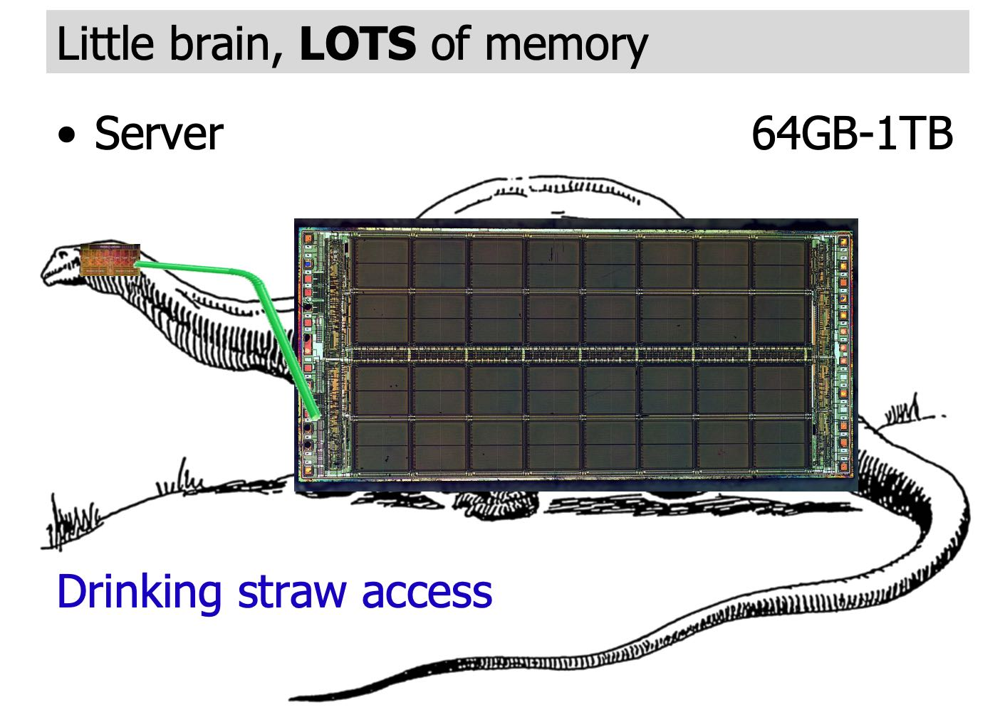
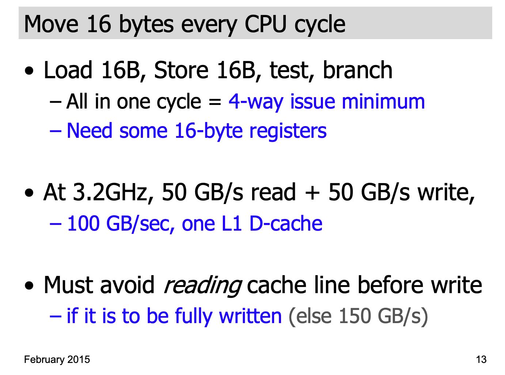
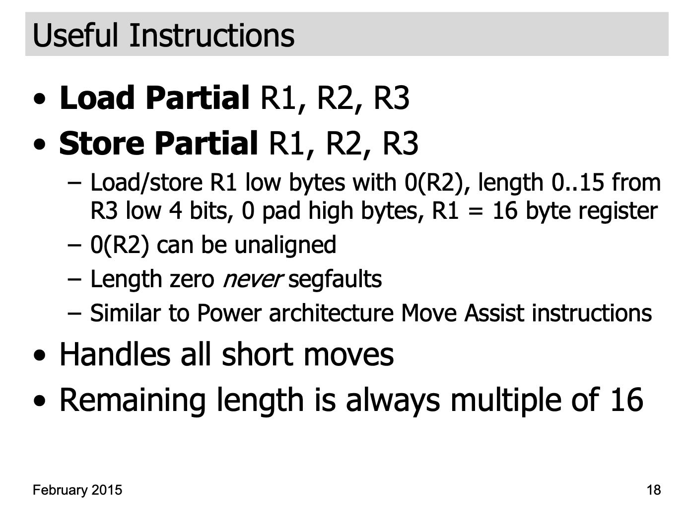
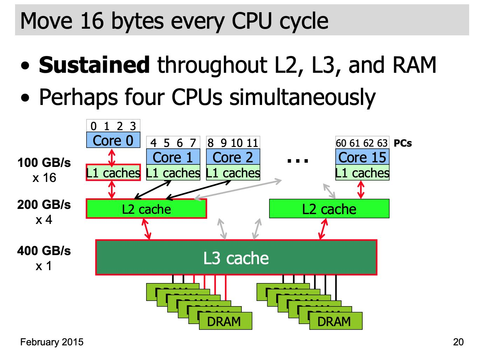
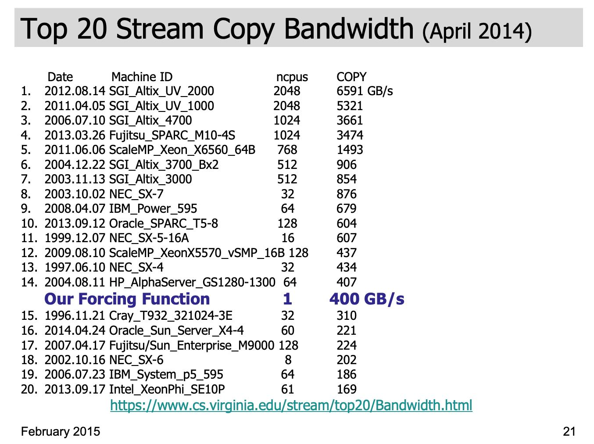
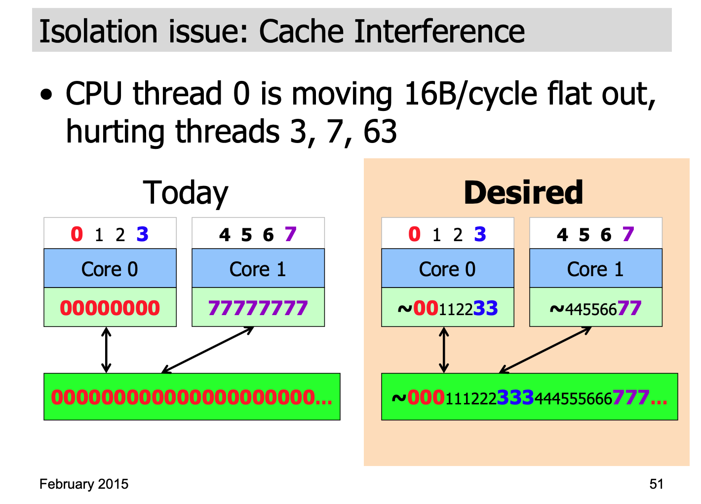
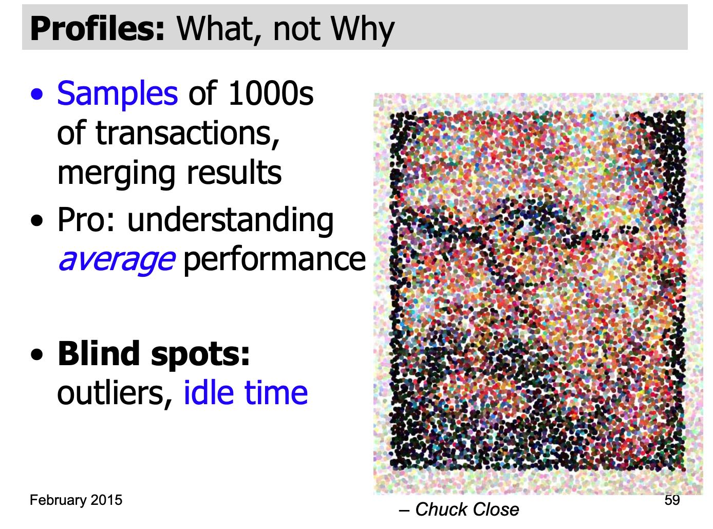
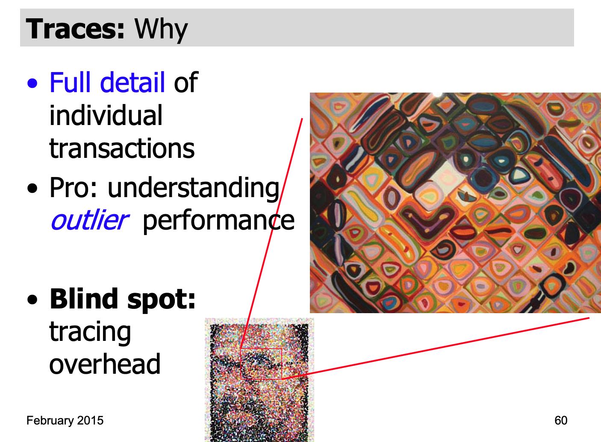
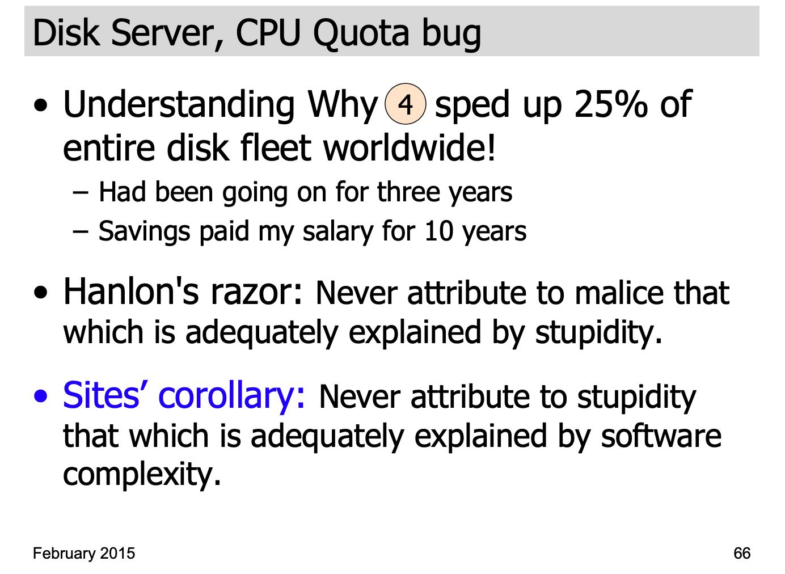

Data Center Computers: Modern Challenges in CPU Design
Table of Contents
https://www.youtube.com/watch?v=QBu2Ae8-8LM
Data Center环境下面对于CPU设计的挑战。虽然是标题是关于CPU设计挑战，但是其实里面没有说怎么设计CPU，而是点出了问题背景。了解这些问题背景，对于分析data center环境下面的应用程序，是非常有帮助的。
数据中心机器面临4个问题：
- Move data: big and small 如何在内存中快速地移动数据
- Real-time transactions: 1000s per second 大量的实时事务，不可避免地会遇到长尾问题
- Isolation between programs 程序之间是通过软件进行隔离的，隔离效果并不理想
- Measurement underpinnings 更好的测量方式(sampling vs tracing) http://danluu.com/perf-tracing/
1. Move data: big and small
数据中心的Server好像是下面这样的，CPU L3 Cache(i7 12MB)相比RAM简直没有办法比，大量的money也放在RAM上。

因为数据中心设计到大量的数据move, 如果我们想快速移动数据，比如16 bytes CPU cycle. 那么我们需要做到：
- 至少16字节的寄存器，并且每个周期会有load/store/test/branch. 并且是至少4路并行。
- 如果是3.2Ghz的CPU，那么吞吐必须在50GB/s. 如果加上读写那么就是100GB/s
- 如果write之前还需要读cache line的话，那么就需要150GB/s. 所以还需要使用non-temporary write. 最后加一个mfence.

因为还涉及到比较短的字符串挪动，为了处理对齐情况，CPU上最好支持比如 load/store partial R1,R2, R3这样的指令可以快速挪动16字节以内的变长字节。

如果整个pipeline都能保持100GB/s的话，那么L3 Cache/RAM之间的持续带宽必须在400GB/s.


2. Real-time transactions: 1000s per second
如何更好地控制长尾延迟：锁持有时间，调度延迟， 以及共享资源之间相互影响（这个和后面资源隔离性有关系）
Modern challenges in CPU design
- A single transaction can touch thousands of servers in parallel
- The slowest parallel path dominates
- Tail latency is the enemy
- Must control lock-holding times
- Must control scheduler delays
- Must control interference via shared resources
3. Isolation between programs
影响主要来自于软件，但是硬件上需要提供机制来进行隔离，比如CPU Cache可以根据cpu thread来进行隔离
Many Sources of Interference
- Most interference comes from software
- But a bit from the hardware underpinnings
- In a shared apartment building, most interference comes from jerky neighbors
- But thin walls and bad kitchen venting can be the hardware underpinnings
Isolation between programs
- Good fences make good neighbors
- We need better hardware support for program isolation in shared memory systems
Modern challenges in CPU design
- Isolating programs from each other on a shared server is hard
- As an industry, we do it poorly
- Shared CPU scheduling
- Shared caches
- Shared network links
- Shared disks
- More hardware support needed
- More innovation needed

4. Measurement underpinnings
Samples只能看到大体状况，而Traces则可以提供更多的细节。 http://danluu.com/perf-tracing/


作者介绍了根据trace发现的一个因为CPU throttle造成disk server经常出现高延迟的问题，而这种东西使用sampling是发现不了的。然后作者搞了一个Sites' corollary: 如果一个问题可以解释为软件复杂性的，那就不要解释成为愚蠢。

对于CPU设计上要提供low overhead的tracing机制，这样可以zoom in发现更加细微的问题。
Modern challenges in CPU design
- Need low-overhead tools to observe the dynamics of performance anomalies
- Transaction IDs
- RPC trees
- Timestamped transaction begin/end
- Traces
- CPU kernel+user, RPC, lock, thread traces
- Disk, network, power-consumption